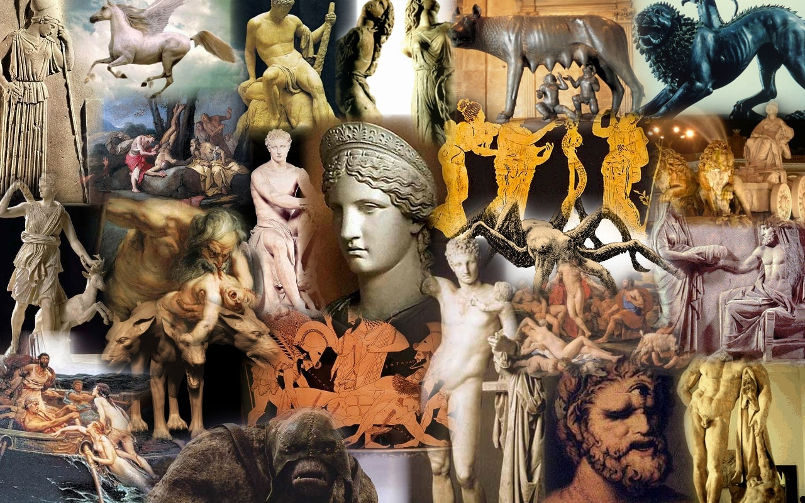
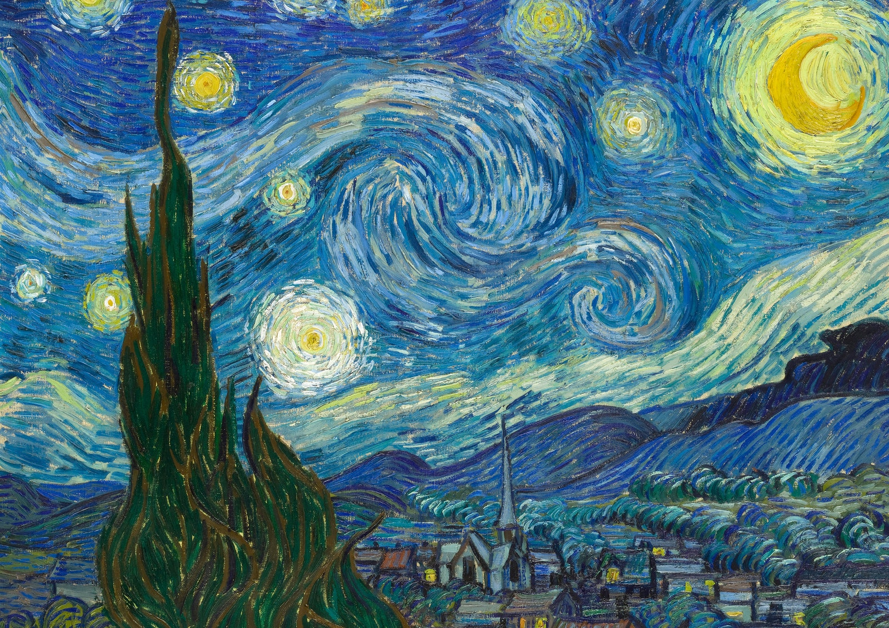
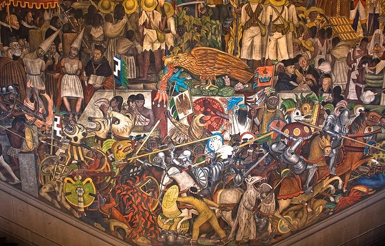

La historia del arte es un tema amplio y fascinante que abarca miles de años de creación artística. 
Partiendo del hecho de que desde hace milenios texto e imagen conforman una pareja bienavenida, de que la historia del arte está llena de palabras –palabras que construyen un juicio crítico o estético, una propedéutica, un manifiesto…- y de que nuestra experiencia de la obra de arte comporta un considerable cociente verbal, se observa que la ecuación palabra-arte puede orientarse en muy distintas direcciones, entre ellas la del título. Se encuentre en el reverso de la tela –condenándolo al olvido-, en la superficie visible de la obra o en su proximidad, se ha convertido en un elemento más de ella, ha acabado por formar cuerpo con ella, se ha hecho tan omnipresente que su ausencia se convierte casi en mutilación. 
La historiografía del arte es una ciencia multidisciplinar, procurando un examen objetivo del arte a través de la historia, clasificando culturas, estableciendo... 
La asignatura Introducción a la Historia del Arte aborda, de manera genérica, el estudio analítico y comprensivo de las manifestaciones artísticas desde la...
En este ensayo al autor ha tratado de adentrarse en la naturaleza del tema, indicando en qué consiste el título, señalando su carácter propio o añadido, rastreando su genealógica, estudiando el proceso por el cual fue adquiriendo una presencia más relevante -ya colaborando con la identificación, ya transformándose en pieza esencial del engranaje de la lectura- hasta alcanzar un estado de hipertrofia o, por el contrario, de supuesta anulación en el que se quiso ver la adecuación perfecta a ese proceso de depuración morfológica que acabaría rindiéndose a las posibilidades de los propios medios artísticos de expresión para alcanzar la añorada desalienación artística, algo en lo que indudablemente se avanzó, pero que no llegó a consumarse, o no lo hizo totalmente, advirtiéndose un cierto grado de claudicación.